Informe de Trabajo Remoto y Salud Mental
Este datasets tiene un conjunto de datos que analiza cómo afecta el impacto del trabajo remoto en los empleados, considerando aspectos como los niveles de estrés, el equilibrio entre la vida laboral y personal, y las condiciones de salud mental. La información abarca diversas industrias y regiones, y proporciona datos sobre cómo el trabajo a distancia influye en la productividad y bienestar de los empleados. El mismo fue obtenido de Kaggle - Datasets.
El objetivo principal es identificar los factores que influyen en el nivel de estrés de los empleados según la modalidad de trabajo (remoto, híbrido o presencial). Además, se pretende analizar cómo estos factores afectan la salud mental de los empleados en relación con variables como la edad, la industria en la que trabajan, y otras características demográficas.
Estructura del Informe
- Resumen General:
- ⭐Descripción: Se puede obtener un panorama general de toda la información principal del datasets con un toggle para cambiar entre cantidad y porcentaje.
- ⭐Variables clave: Genero, modalidad de trabajo, Fecha de ingreso, rol, indrustria, estrés y Region.
-
Detalle por empleado:
- ⭐Descripción: Principalmente un detallado con toda la información del empleado, nivel de estres por la modalidad de trabajo, modalidad de trabajo, cuanta actividad fisica hace, si reporto una enfermedad a la empresa, nivel de satisfacción por trabajar de manera remota, y por último si la empresa le ofrece acceso médico.
- ⭐Variables clave: Genero, nivel de estrés, región, modalidad de trabajo, nivel de satisfacción, enfermedad reportada, acceso médico, id de empleado, años de experiencia, horas trabajadas por semana, fecha de ingreso a la empresa, cambio de productividad por trabajar remoto.
-
Detalle por rol:
- ⭐Descripción: Detallado de cuantos empleados hay en cada industria y rol, con su correspondiente porcentaje, modalidad de trabajo que tienen, junto con el nivel de estrés y satisfacción del empleado.
- ⭐Variables clave: Genero, nivel de estrés, región, modalidad de trabajo, nivel de satisfacción, rol, industria.
-
Condición Mental y Calidad del Sueño:
- ⭐Descripción: Cantidad de empleados por genero y que calidad de sueño tienen, a su vez, si tienen acceso a salud mental, la enfermedad mental que reportaron y la cantidad de horas trabajadas por semana.
- ⭐Variables clave: Genero, nivel de estrés, calidad de sueño, enfermedad reportada, id de empleado.
El reporte se divide en tres partes: la primera, segunda y tercera corresponden a las visualizaciones, y la cuarta es un detalle del trabajo realizado.
- Video de YouTube
- Desde la web de Power BI (para aquellos con cuenta paga, permitiendo la interactividad).
- Mediante imágenes estáticas.
- Trabajo Realizado.


El trabajo realizado en este reporte consta:
-
Análisis del archivo CSV
- Se descargó el datasets proporcionado por Kaggle. Este archivo contenía información por empleado, edad, genero, rol, industria, años de experiencia, horas trabajadas a la semana, cantidad de reutiones realizadas, un rating del balance del trabajo y la vida personal, nivel de estrés, condición mental reportada a la empresa, si tienen o no acceso a salud mental, cambios en la productivadad, rating de aislamiento social, nivel de satisfacción con trabajar de forma remota, soporte de la empresa por trabajar en remoto, actividad física, calidad del sueño y región .
- Se analizó el CSV para identificar qué columnas eran relevantes para la creación de las tablas y las dimensiones. También se agregó una columna de fecha para poder cumplir con los requisitos de la entrega del proyecto, dicha fecha, se la obtuvo con la función "=ALEATORIO.ENTRE" usando cómo valor mínimo la edad mínima de todos los empleados y como valor máximo la fecha que se realizó el proyecto.
- Datasets crudo:
-
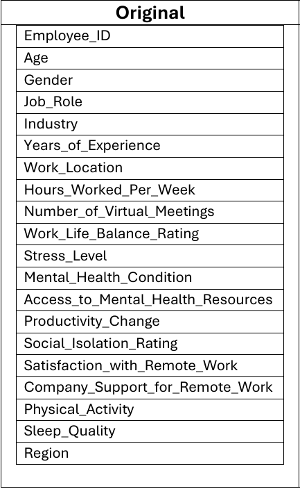
- Datasets Normalizado:
-
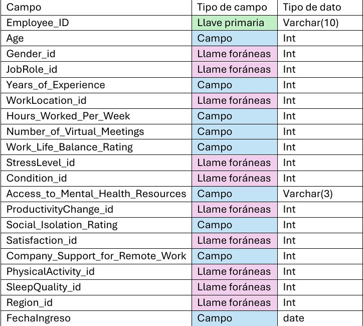
-
Diseño de la tablas de Dimensionamiento
- DimGender
- Genero del empleado.
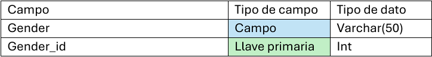 - DimJobRole
- Rol del empleado en la empresa.
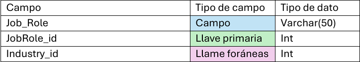 - DimIndustry
- Industria a la cual pertenece el empleado.
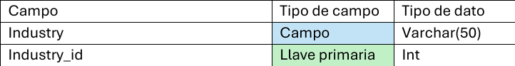 - DimWorkLocation
- Modalidad de trabajo del empleado, si es híbrido, remoto u onsite.
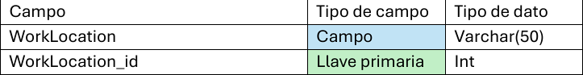 - DimStressLevel
- Nivel de estrés del empleado.
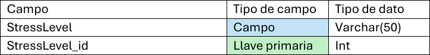 - DimCondition
- Última condición del estado mental reportado por el empleado.

- DimProductivityChange
- Si el empleado se siente productivo.
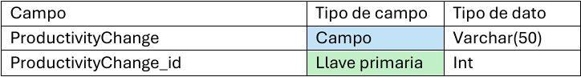 - DimSatisfactionRemote
- Si el empleado esta satisfecho trabajando de manera remota.
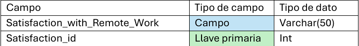 - DimPhysicalAct
- Actividad física del empleado.
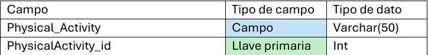 - DimSleep
- Calidad del sueño del empleado.
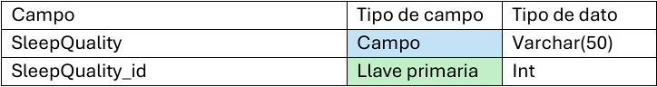 - DimRegion
- La región a la cual pertenece el empleado.
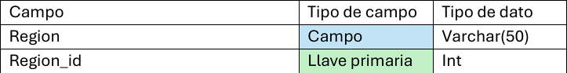
Alcance del informe:
- El alcance del reporte se centra en brindar una comprensión de cómo las diferentes modalidades de trabajo afectan el bienestar de los empleados. El análisis podría ser utilizado para tomar decisiones estratégicas relacionadas con las políticas de trabajo remoto y bienestar laboral.
- Los usuarios finales podrían llegar a ser:
- ⭐Departamento de RRHH, ejemplo: aplicar programas de apoyo para empleados según los resultados del análisis.
- ⭐Gerentes y Líderes, ejemplo: identificar patrones de estrés o insatisfacción en sus equipos para poder ajustar la carga laboral y aplicar estrategias personalizadas para aumentar la satisfacción laboral.
- ⭐Gobiernos, ejemplo: lograr entender tendencias en el empleo y el bienestar laboral, ayudando a regular las políticas de trabajo remoto.